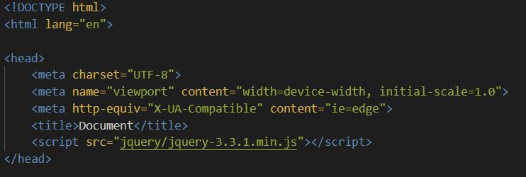
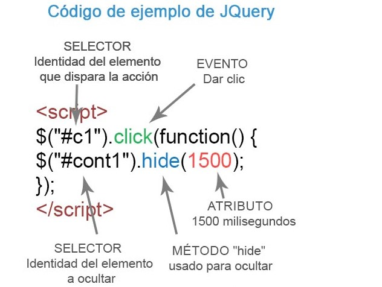

Incluir Jquery en tu HTML
Descargar la librería de su página oficial es indipensable
Una vez que tenemos en nuestro poder la librería debemos incluirla en nuestro archivo HTML usando
la etiqueta script dentro del head:

1Sintaxis de JQuery
La sintaxis de jQuery se basa en el objeto jQuery o $(). Este objeto tiene sus métodos,
por lo que la forma más común sería la siguiente:
$("selector").metodo(argumentos);
La sintaxis basica es: $(selector).action()
Un signo $ para definir/acceder a jQuery
Un (selector) para "consultar (o encontrar)" elementos HTML
Una acción jQuery () que se realizará en los elementos
!Ejemplos
$(this).hide()- Oculta el elemento actual
$("p").hide()- Oculta los elementos "< p >"
$(".test").hide() - oculta todos los elementos con class="test".
$("#test").hide() - oculta el elemento con id="test
En esta sintaxis básica observamos las siguientes partes:
El objeto jQuery al principio $(), indicado por el signo "dolar" seguido de un paréntesis.
Al objeto jQuery se le pasa como argumento (dentro del paréntesis) un "selector", que buscará en la página uno o varios elementos para trabajar con ellos.
Le sigue un método del objeto jQuery. para ello escribimos primero un punto, después el nombre del método, y luego entre paréntersis los argumentos.
Los argumentos (dentro del paréntesis) que se le pasan al método pueden ser muy variados, desde algunos métodos que no requieren argumentos a otros en los que podemos poner funciones anónimas que incluyan otros métodos.
La misma estructura "document ready" se basa en este esquema. En el argumento del método "ready" ponemos una función anónima, en la cual escribimos el resto del código, volviendo a repetir este esquema.
2Función JQuery
El primer fragmento de un comando jQuery será una llamada a la función jQuery o el alias $.
Cualquiera de las dos opciones es válida, pero generalmente, utilizaremos el alias por dos motivos:
Requiere menor cantidad de código
"Salta" mucho más a la vista, siendo muy útil para diferenciarlo del código JavaScript estándar.
3Siempre que vayamos a hacer uso de la librería jQuery, deberemos utilizar una sintaxis estructurada,
dividida en fragmentos fácilmente diferenciables:
Función jQuery
Un selector como parametro
Uno o varios métodos de la librería
Opcionalemente, parámetros del método
4Debemos de insertar dentro de un elemento SCRIPT, las instrucciones de la siguiente forma:
< script>
$(function () {
//Instrucciones de JQuery
});
También se puede emplear en enlaces, bloques (DIV) o en otros elementos HTML, siempre que se les agregue un identificador (ID).
Es posible también usar otros eventos como dblclick, hover (posicionar el cursor del mouse encima), keypress, keyup, focus y otros.
La sintaxis básica es la siguiente:
< script>
$("selector inicio").evento(function () {
$("selector destino").funcion o método(atributo)
});
< /script>
Selector de inicio es quien inicia la acción.
Evento puede ser click, hover, etc.
Selector de destino es el que identifica el elemento a modificar.
Las funciones o métodos son quienes finalmente ejecutan la tarea y los atributos son opcionales en algunos casos.
En la siguiente imagen se puede ver de forma gráfica el uso de cada elemento.
